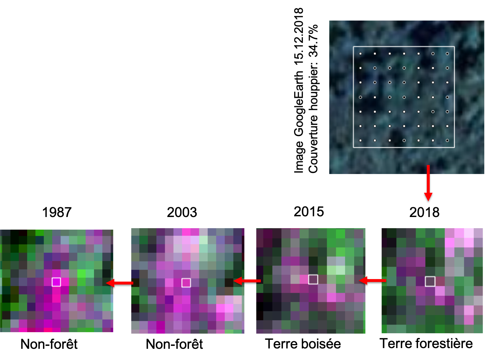

2.2.3 Parcelles de validation
2.2.3.1 Échantillonnage
La sélection des parcelles de validation est basée sur les cartes forêt/non-forêt, notamment leurs transitions entre les années 1987 – 2003 – 2015 – 2018. Tout d’abord les transitions sont déterminées pour chaque point du réseau d’échantillonnage. Ensuite un échantillon aléatoire stratifié est tirré avec une répartition de l’échantillon aux strates (transitions) qui est la valeur moyenne d’une répartition proportionnelle à la taille des strates et d’une répartion égale.
2.2.3.2 Occupation des terres
L’occupation des terres et le changement de l’occupation des terres est déterminé sur base des images Landsat. Trois différentes catégories sont distingués:
- forêt (couverture houppier ≥ 30%)
- terre boisée (couverture houppier entre 10% et 30%)
- non-forêt (couverture houppier < 10%)
La couverture des houppiers est utilisé pour détérminer l’occupation des terres sur l’image Landsat de la date correspondate. À partir de cette référence, l’occupation des terres est détérminé pour les autres dates de référence 1987 – 2003 – 2015 – 2018. La figure suivante illustre la procédure:

Script R: 01_SSTS/02_BdD/_src/create-val-plots.R
###############################################################################
# create-val-points.R: Créer un ensemble de parcelles de validation
# -----------------------------------------------------------------------------
# Bern University of Applied Sciences
# Oliver Gardi, <oliver.gardi@bfh.ch>
# 13 Mai 2020
# Préparation des variables ===================================================
OUT.DIR <- paste0(DIR.SST.BDD, "/03_val-plots/empty")
if(!dir.exists(OUT.DIR)) dir.create(OUT.DIR, recursive=TRUE)
IN.DIR <- paste0(DIR.MRV.MCF, "/2_raw-maps/FC30/TGO")
# Fusionner les cartes des années de référence (1987, 2003, 2015 et 2018)
maps <- merge(raster(paste0(IN.DIR, "/TGO_1987_F30r.tif")),
raster(paste0(IN.DIR, "/TGO_2003_F30r.tif")),
raster(paste0(IN.DIR, "/TGO_2015_F30r.tif")),
raster(paste0(IN.DIR, "/TGO_2018_F30r.tif")))
# Créer carte des changements (p.ex. FFFN pour déforestation entre 2015 et 2018)
change.map <- maps[[1]] + maps[[2]]*10 + maps[[3]]*100 + maps[[4]]*1000
# Charger la grille d'échantillonnage du SSTS
frame.points <- readOGR(paste0(DIR.SST.BDD, "/01_reseau-SSTS/TGO_frame_480m.shp"))
# Extraire la transition pour chaque parcelle
frame.points$trans <- raster::extract(change.map, frame.points)
# Allocation des points de validation =========================================
n <- 4000 # la taille de l'échantillon
alloc <- freq(change.map)[1:16,] # fréquence des transitions (p. ex FFFN)
# Allocation proportionelle et égale
alloc <- cbind(alloc,
prop=round(n*alloc[,"count"]/sum(alloc[,"count"])),
equal=round(n/nrow(alloc)))
# Allocation balancée (moyenne entre proportionelle et égale)
alloc <- cbind(alloc,
balanced=round((alloc[,"prop"] + alloc[,"equal"])/ 2))
# Echantillonnage des parcelles de validation ================================
# Ajoute les attributs des parcelles d'entraînement
train.plots <- readOGR(paste0(DIR.SST.BDD, "/02_train-plots/assessed/COV_parcelles.shp"))
frame.points <- merge(frame.points,
train.plots@data[,c("PLOTID", "img_date", "img_src", "mod_date", "author", "ccov")],
by="PLOTID", all.x=TRUE)
# Créer une couche de points vide
val.points <- frame.points[0,]
# Initialiser le générateur de nombres aléatoires
set.seed(RSEED)
# Pour chaque transition ...
for(i in 1:nrow(alloc)) {
strat.n <- alloc[i, "balanced"] # nombre d'échantillons à tirer
sample.ids <- NULL # vecteur pour les ID à échantillonner
# Tout d'abord, prend les parcelles avec ...
ids.tp <- which(!is.na(frame.points$trans)
& frame.points$trans==alloc[i, "value"]
& !is.na(frame.points$ccov)) # couverture houppier connue
n.tp <- min(length(ids.tp), strat.n)
if (n.tp > 0) sample.ids <- c(sample.ids, sample(ids.tp, n.tp))
# ... et completer avec autres échantillons de la grille avec
ids.r <- which(!is.na(frame.points$trans) &
frame.points$trans==alloc[i, "value"] &
is.na(frame.points$ccov)) # couverture houppier inconnue
n.r <- min(length(ids.r), strat.n - n.tp)
if (n.r > 0) sample.ids <- c(sample.ids, sample(ids.r, n.r)) # aléatoirement
# Ajouter aux points de validation
val.points <- rbind(val.points, frame.points[sample.ids, ])
}
# Mélanger les points de validation et ajouter un identifiant
val.points <- val.points[sample(1:nrow(val.points)), ]
val.points$SAMPLEID <- paste0("val-", str_pad(string=1:nrow(val.points),
width = 4,
pad = "0",
side = "left"))
# Conversion des points en parcelles et ajouter des attributs =================
# Grille Landsat
landsat.grid <- raster(change.map)
values(landsat.grid) <- 1
# Selectionner les pixels Landsat correspondantes et convertir en polygone
val.plots <- rasterToPolygons(mask(landsat.grid, val.points))
# Extraire les attributs des points d'entraînement ...
val.plots@data <- over(val.plots, val.points[, c("PLOTID", "SAMPLEID",
"xcoords", "ycoords",
"trans", "ccov",
"img_src", "img_date",
"author", "mod_date")])
# ... convertir couverture des houppiers disponibles en %, les autres NA
val.plots$ccov <- format(round(100*val.plots$ccov, 1))
val.plots$ccov[val.plots$ccov == " NA"]<- NA
# ... et compléter avec attributs occupation des terre 1987, 2003, 2015 et 2018
val.plots$lc_18 <- val.plots$lc_15 <- as.character(NA)
val.plots$lc_03 <- val.plots$lc_87 <- as.character(NA)
# Sauvegarder parcelles sous format Shapefile et KML
writeOGR(val.plots, dsn=".", layer="UOT_parcelles", driver="ESRI Shapefile", overwrite=TRUE)
writeKML(val.plots, kmlname="UOT_parcelles", filename="UOT_parcelles.kml")
# Créer une grille d'échantillon 7x7 dans chaque parcelle =====================
# Détérminer la grille
grid.size <- 7
res <- res(landsat.grid)[1]
offset <- c(res/grid.size/2 + (0:(grid.size-1))*res/grid.size)
# Diviser les parcelles pour un traitement parallèle
subsets <- split(val.plots, f=1:86)
registerDoParallel(CORES-1)
val.grids <- foreach(subset=subsets, .combine=bind, .multicombine=TRUE) %dopar% {
# Créer un couche de points vides ...
grids <- SpatialPointsDataFrame(data.frame(x = 0, y = 0),
data=data.frame(PLOTID = 0,
SAMPLEID = 0,
GRIDPOINT = 0))[-1,]
# ... et ajoute la grille d'échantillon pour chaque parcelle
for(p in 1:length(subset)) {
plot <- subset[p,]
ext <- extent(plot)
grids <- bind(grids, SpatialPointsDataFrame(expand.grid(ext@xmin+offset, ext@ymin+offset),
data=data.frame(PLOTID = plot$PLOTID,
SAMPLEID = plot$SAMPLEID,
GRIDPOINT = 1:grid.size^2)))
}
grids
}
# Appliquer le système de référence des coordonnées
proj4string(val.grids) <- proj4string(val.plots)
# fusionner avec les attributs (arbre, oui ou non?) déjà collectés
train.grids <- readOGR(paste0(DIR.SST.BDD, "/02_train-plots/assessed/COV_parcelles_grid.shp"))
val.grids <- merge(val.grids,
train.grids@data[, c("PLOTID", "GRIDPOINT", "tree")],
all.x=TRUE)
# Sauveguarder les grille d'échantillon sous format Shapefile
writeOGR(val.grids, dsn=OUT.DIR, layer="UOT_parcelles_grid", driver="ESRI Shapefile", overwrite=TRUE)
# Diviser parcelles et grilles d'échantillon en 10 sous-ensembles =============
# pour le traitement par différents photo-interprètes
subsets <- split(val.plots, f=1:10)
for(i in 1:length(subsets)) {
# Sauvegarder parcelles sous format Shapefile et KML
writeOGR(subsets[[i]], dsn=OUT.DIR, layer=paste0("UOT_parcelles_", i),
driver="ESRI Shapefile", overwrite=TRUE)
writeKML(subsets[[i]], kmlname=paste0("UOT_parcelles_", i) ,
filename=paste0("UOT_parcelles_", i, ".kml"))
# Sauvegarder les grilles correspondantes sous format Shapefile
subset.grids <- val.grids[val.grids$PLOTID %in% subsets[[i]]$PLOTID,]
writeOGR(subset.grids, dsn=OUT.DIR, layer=paste0("UOT_parcelles_", i, "_grid"),
driver="ESRI Shapefile", overwrite=TRUE)
}